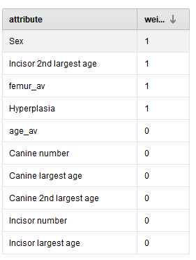
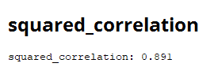

Predicción a partir de restos óseos
Datos utilizados data set restos óseos

El data set utilizado contiene información de restos fósiles hallados en
Gråbrødre (monasterio franciscano) de la ciudad de Ribe en el suroeste de Jutlandia, Dinamarca.
De los cuerpos excavados se utilizaron los datos de 114 adultos (67 hombres y 47 mujeres) .
El objetivo es predecir la altura del individuo a partir de restos óseos.
Esto sin dudas es una tarea muy importante a nivel arqueológico e histórico dado que ayuda a comprender características
de los seres humanos que habitaban la tierra hace miles de años. Con esta información se realizan luego muchos estudios
sobre las características de esas personas, sus hábitos y costumbres para estudiar la historia de la evolución de los seres humanos.
El marco teórico forense afirma la relación entre el tamaño del fémur y la altura de la persona dependiendo del sexo, y otras variables.
Por otra parte se utilizan términos como hiperplasia que es el desarrollo incompleto del esmalte dental que se produce antes de que la pieza dental erupcione en la boca, esta característica no se modifica una vez conformada.
Según ADBOU la hiperplasia puede ser un indicador de problemas de crecimiento y/o pobre salud. Algunas están directamente relacionadas a problemas de salud mientras que otras pueden ser producto de una enfermedad pasajera que ocurrió en el momento de la niñez en el cual se estaba desarrollando el esmalte dental. Es importante considerar que toda enfermedad sufrida durante la niñez puede provocar un desarrollo en el crecimiento menor del esperado.
Por otra parte, para medir la altura de los esqueletos hallados debe hacerse en posición supina extendida y sólo a aquellos
que se encuentran preservados y no han sido movidos. Se mide desde el punto craneal más alejado del cuerpo y el punto más lejano del astrágalo (hueso del tobillo).
La edad y el sexo se estiman por procedimientos forenses probados y descriptos en diversos estudios arqueológicos.
El uso del método requiere entrenamiento básico en osteología y se basa en ambas observaciones hechas de esqueletos de muestras de referencia (material esquelético donde la edad de la muerte y el sexo es conocido) y métodos estadísticos (análisis de regresión logística y teorema de Bayes). Consideran huesos como: Limbus acetabula, Proximal Tibia, Femur linea aspera, Femur fossa trochanteria, y Femur caput fóvea. La edad se determina con un margen superior e inferior.
Análogamente el sexo se clasifica utilizando una variable ordinal de 7 categorías que van desde claramente masculino, predominantemente masculino, levemente masculino e indefinido a claramene femenino, considerando cráneo, pelvis y el esqueleto postcraneal.
El tamaño de los dientes se considera a la hora de estimar la edad, los cuatro incisivos forman un grupo, los dos los caninos forman un grupo y los cuatro molares caducifolios forman un grupo. Un grupo solo tiene que estar representado por un solo diente para obtener una puntuación positiva.
Luego de una breve comprensión del área de estudio abordada por el proble se realiza una descripción de las variables relevadas:
El id cumple una función únicamente identifcatoria del dato relevado.
Location: en todos los casos es Ribe, salvo un caso que tiene en la variable locación el número de tumba, un error de registro.
Site_Number: El 'número de sitio' es el registro de las autoridades de la excavación.
Age_minumum: es la edad mínima estimada
Age_maximum: es la edad máxima estimada
Sex: es la estimación de sexo de acuerdo a los datos anteriormente mencionados
Grave Number: La numeración de las tumbas suele no ser consistente dado que se excavaron muchas tumbas en excavaciones independientes los números no guardan una estricta relación.
Canine number: Número de hiperplasias visibles en el canino.
Canine largest age: edad en que se formó la hiperplasia más grande del canino.
Canine 2nd largest age : edad en que se formó la 2da hiperplasia más grande del canino.
Incisor number: Número de hiperplasias visibles en el incisivo.
Incisor largest age: edad en que se formó la hiperplasia más grande del incisivo.
Incisor 2nd largest age: edad en que se formó la 2da hiperplasia más grande del incisivo.
Height in grave: altura medida del esqueleto (variable dependiente)
Notas de anomalías en las vértebras: cualquier observación sobre anomalías observadas que pueda influenciar la altura medida. Si hay anomalías que puedan afectar la altura no debería ser tenido en cuenta el dato.
Femur left: medida en cm del fémur izquierdo
Femur right: medida en cm del fémur derecho
Abnormalities Fémur: notas sobre anormalidades del fémur.
Notes: cualquier nota a considerar, cualquier enfermedad sufrida.
Date: fecha de registro del dato
Signature: Firma del investigador que colectó el dato
Teeth scorable: Indica si los dientes son puntuables o no. Se considera un diente no puntuable cuando más de un tercio del diente está desgastado. Cuando un diente está tan desgastado,
Hypoplpasia: Debe marcarse si se puntúan las hiperplasias. Las hiperplasias se puntúan en el canino superior izquierdo y el incisivo izquierdo.
Análisis de atributos:
Los atributos considerados iguales para todas las instancias no serán considerados por ser irrelevantes para el modelo,
por ejemplo location y site_number son iguales para todo el modelo, grave_number se aclara en la documnetación de referencia que no tiene ninguna significación por cómo fueron recolectados los datos,
por ende tampoco parece ser de utilidad para la predicción del modelo.
Las notas serán consideradas cualitativamente a la hora de proceder a descartar el dato si el mismo no reúne las condiciones para ser analizado
pero escapa el alcance del presente análisis el procesamiento de lenguaje natural.
A su vez, fecha y firma tampoco son consideradas relevantes para el presente análisis dado que es información irrelevante
para el modelo en el caso de la firma y la fecha es toda del mismo mes de 2008 por lo que no se espera que hayan diferencias significativas.
A continuación se observan resumen de estadísticos de los atributos descartados:

Por otra parte para evitar variables correlacionadas en el modelo tamaño del fémur (izquierdo y derecho) así como edad,
se considera relevante realizar un promedio de la edad (mínima y máxima) y del tamaño del fémur (izquierdo y derecho).
Se recodifica sexo que está como una variable nominal a hombre: 0 y mujer: 1 para poder trabajar con modelos que tomen datos
con valores numéricos.
Se filtran los datos missing para sexo y para promedio de tamaño del fémur conservando para aquellos registran
que cuentan sólo con un valor de tamaño del fémur y un valor de edad dicho valor como representativo del promedio.
También se filtraron los datos para los cuales el diente es "puntuable", dado que no tiene sentido analizar un diente que no puede ser analizado porque está muy deteriorado
no va a tener información de hiperplasia y si la tuviera no sería confiable.
Observando los estadísticos resumen luego de filtrar las variables descartadas:

Se observa una gran cantidad de missing en las variables número de hiperplasia en canino y en incisivo así como la edad de la más larga y la segunda más larga tanto para caninos como para incisivos.
Dado que los más probable es optar por descartarlos ya que imputar datos de medidas sería arriesgado, vamos a observar el peso de los atributos en el modelo
mediante algoritmos de feature selection:
Algoritmo evolutivo

Algoritmo forward selection
Algoritmo PCA

PCA tiene un primer componente significativo difuso, el 1er componente explica un 44,7% de la varianza y el segundo un
acumulado de 63,4%, como se observa a continuación con la tabla de valores propios:
Algoritmo backward elimination

Del análisis de todos los algoritmos podemos afirmar que sexo es una variable que se repite como importante en todos,
así como tamaño promedio del fémur e hiperplasia.
El número de hiperplasias visibles en el canino y la edad en que se formó la hiperplasia más grande del canino también
demuestran ser variables que se repiten en ambos modelos.
Luego de realizar varias pruebas se observa que la performance del modelo desciende al incluir hiperplasias visibles en el canino
y lo mismo sucede al incluir edad en que se formó la hiperplasia más grande del canino.
Por tanto considerando el análisis anterior se seleccionan los atributos : Edad promedio, tamaño del fémur promedio y sexo.
Se prueba los algoritmos de regresión lineal, árbol de decisión y random forest, obteniendo el árbol de decisión la mejor
performance con 89,1% al usar una profundidad máxima del árbol de 4 y un criterio de división de mínimos cuadrados dado que la variable de salida
es numérica.
Performance Árbol de decisión

Performance Árbol de Regresión lineal

Performance Árbol de random forest
Por tanto podemos afirmar que el 88,1% de la altura de la persona es explicada por la variación de la edad promedio
estimada por los investigadores, el sexo, y el tamaño del fémur promedio.
Por último se corre el modelo con árboles de decisión, probando medir los errores del data set de test previamente dividido
para tal fin obteniendo estadísticos descriptivos del error:
Un promedio de 0,379 con una desviación de 4,819 lo que no es menor.
Por último como resultado final del modelo se obtiene el siguiente árbol de decisión de profundidad 4: